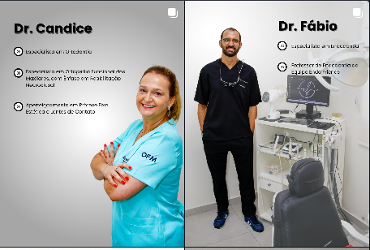
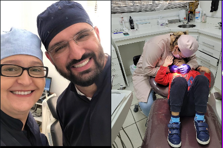
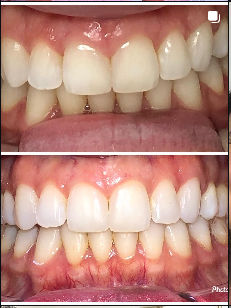
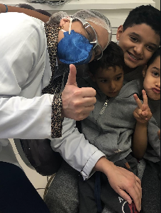
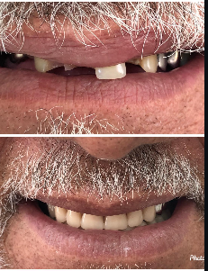
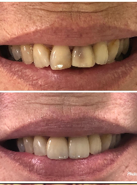

Dra. Candice
Especialista em Ortodontia e Ortopedia Funcional dos Maxilares, com ênfase em Reabilitação Neuro-Oclusal (RNO).
Atendimento próximo, planejamento individualizado e especialidades que acompanham diferentes fases da vida — da ortodontia à endodontia.

Mais do que tratar dentes, nosso propósito é criar uma experiência segura e acolhedora. Cada caso é avaliado de forma individual para que o tratamento respeite suas necessidades, sua rotina e seus objetivos.
Especialista em Ortodontia e Ortopedia Funcional dos Maxilares, com ênfase em Reabilitação Neuro-Oclusal (RNO).
Especialista em tratamento de canal, com foco em diagnóstico cuidadoso, preservação dentária e conforto durante o atendimento.
Planejamento para alinhamento dental, função e equilíbrio do sorriso.
Acompanhamento do desenvolvimento e das funções do sistema mastigatório.
Abordagem funcional voltada ao equilíbrio do sistema estomatognático.
Tratamento de canal com atenção ao diagnóstico e à preservação do dente.
Atendimento acolhedor para construir uma relação positiva com o cuidado bucal.
Planejamento individualizado para recuperar estética, função e confiança.
Alguns casos compartilhados pela clínica. Cada paciente possui condições e respostas individuais; a indicação depende de avaliação profissional.





Do primeiro contato ao acompanhamento, a proposta é oferecer clareza, atenção e um ambiente em que adultos e crianças se sintam bem cuidados.
Fale com a CF Odontologia e solicite uma avaliação. Nossa equipe orienta você sobre o atendimento mais adequado para o seu caso.
Agendar pelo WhatsAppRua Vicente Guida, 78
Vila Açoreana — Poá, SP
08556-170
Entre em contato para confirmar horários de atendimento e disponibilidade.
Falar com a clínica